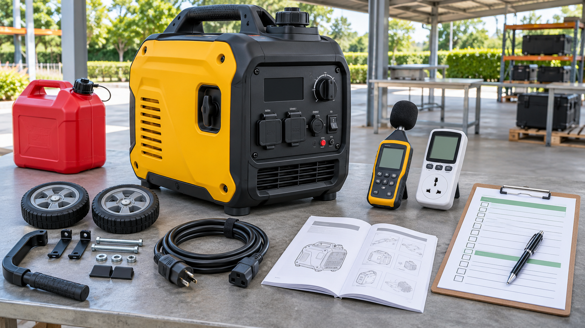
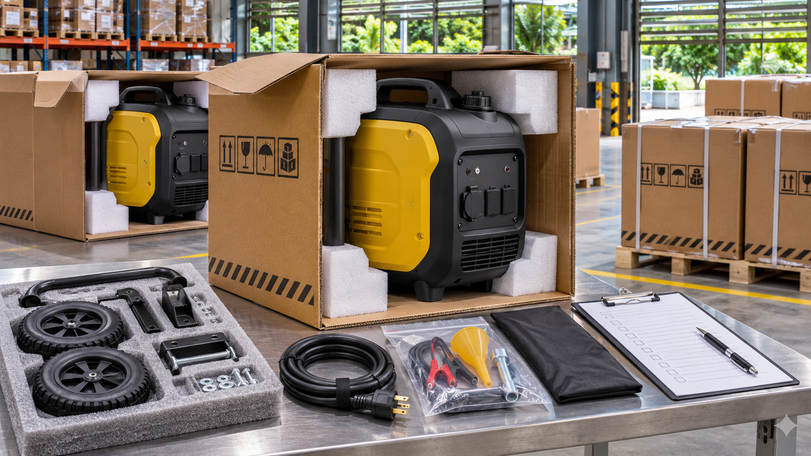

Direct answer: Current buyer interest is strongest around compact inverter generators, quieter operation, dual-fuel options and backup-power compatibility. Treat those as a selection brief, not a marketing checklist. Define continuous and starting loads, voltage/outlet format, fuel, target market, test point, labels, accessories and cartons before comparing suppliers.

1. Start with the load and use case
Do not specify a generator only by a headline wattage. List the equipment to be powered, continuous load, starting/surge load, duty cycle, target voltage/frequency, outlet types and operating environment. An inverter model may suit electronics-sensitive or noise-conscious use; a fuel-flexible model can fit buyers who prioritise different fuel availability. These choices must be matched to the destination market and application rather than copied from another listing.
| RFQ field | Why it matters | Buyer check |
|---|---|---|
| Running and starting load | Prevents an undersized unit or an inflated comparison. | Provide the actual connected equipment and start sequence. |
| Voltage, frequency and outlets | Electrical formats vary by market and end use. | Approve outlet layout, plugs and labelling for the destination. |
| Fuel and runtime test | Claims depend on fuel and test load. | Agree fuel type, load percentage and test duration. |
| Noise and controls | Quiet-operation claims need an agreed condition. | State measurement distance, load and operating mode. |
| Safety information | Fuel-powered generators have CO, fire, burn and electrical hazards. | Confirm required warnings, manuals and market obligations. |
2. Make safety documentation a purchase gate
Portable generators must be used outdoors in accordance with the manufacturer’s instructions; exhaust creates carbon-monoxide risk and fuel/electrical systems create additional hazards. The importer and responsible parties should confirm applicable product, labelling, emissions and electrical rules for the destination market. A sourcing agent can collect supplier documents, inspect labels and coordinate testing, but cannot certify compliance or replace qualified installation and safety advice.
3. Approve a testable production sample
Approve the actual version to be shipped, including engine, alternator/inverter, panel, outlets, breaker, start system, fuel connections, wheel kit, cables, manual and carton. Record serial or batch traceability. Before bulk release, agree how output, starting, loaded operation, controls, safety shutdown functions, leaks and visible finish will be checked.

4. Inspect product, accessories and cartons together
QC should follow the approved sample and test plan: model and serial records, rated output/outlet configuration, start and loaded run test, controls, safety functions, fuel-system leaks, agreed noise check, accessories, warning labels, manual, carton dimensions and protective inserts. Inspect multiple cartons and verify the accessory kit is complete. Use the pre-shipment inspection checklist and carton-marks guide before export handoff.
Frequently asked questions
What should a portable generator RFQ include?
State the intended load, continuous and starting-power requirements, target market, fuel type, voltage and outlet format, start method, runtime test point, noise test condition, safety features, accessories, documentation, packaging and delivery date.
What should generator QC include?
Check model and serial records, rated output and outlet configuration, starting and loaded run test, controls, safety shutoff features, fuel-system leaks, noise at an agreed test condition, accessory completeness, warning labels, manual, carton and export protection.
Build a controlled generator RFQ
Send target market, load list, voltage/outlet requirements, fuel preference, quantity, packaging needs and timing for an initial sourcing review.